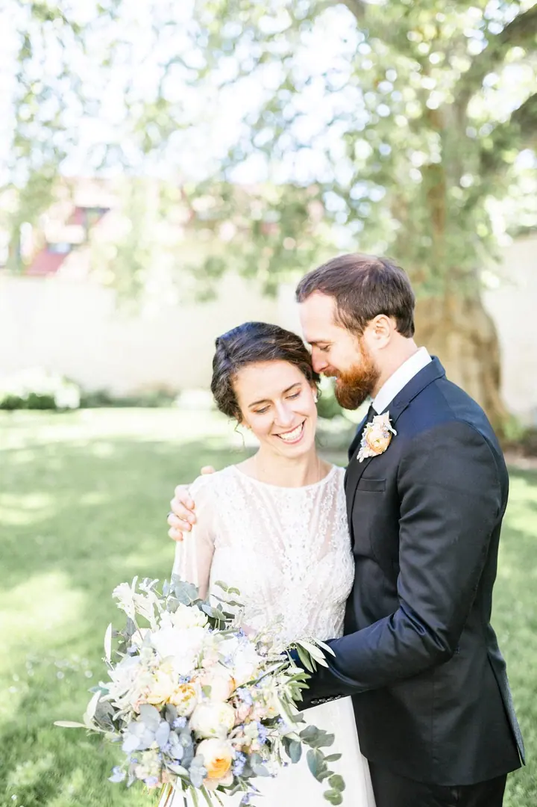
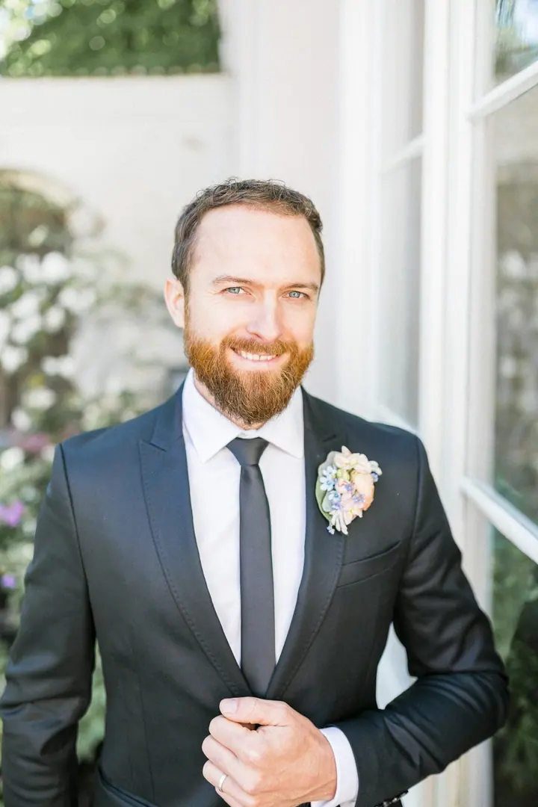

Svatby
Fotím svatby empaticky, citlivě a v elegantním hávu. Zajímá mě hlavně to, co je mezi vámi, a ne jen to, co je vidět na první pohled.





Jmenuji se Eva Neuman a fotím svatby a rodiny v Praze. Fotím hlavně to, na co si nejde sáhnout: pohledy, doteky a tiché chvíle mezi vámi.
Více o mně
„Fotím to za tím, na co si nejde sáhnout.“
— Eva Neuman
Fotím svatby empaticky, citlivě a v elegantním hávu. Zajímá mě hlavně to, co je mezi vámi, a ne jen to, co je vidět na první pohled.
Klidné a přirozené focení celé rodiny. Snímky, ke kterým se budete s blízkými vracet i po letech.
Fotografie jsou ilustrační
Fotím už 10 let. Za tu dobu jsem byla u desítek svateb a fotila stovky rodin. Pořád mě nejvíc baví to, co se nedá naaranžovat: jak se na sebe díváte, když si myslíte, že vás nikdo nevidí.
Fotím empaticky, citlivě a v elegantním hávu. Mám ráda čisté světlo, jemné barvy a detaily, které se snadno přehlédnou, a přitom o vašem dni řeknou nejvíc.
Klienti si u mě cení hlavně klidu, úsměvu a toho, že se na ně umím dobře naladit. Před foťákem se tak můžete chovat přirozeně a já se postarám o to, aby z fotek bylo cítit, jak vám spolu bylo.

Napište mi e-mail nebo zavolejte, kdy a kde se budete brát. Ověřím termín a pošlu vám všechny informace.
Probereme, jak si svůj den představujete, co je pro vás důležité a koho na fotkách nesmí chybět.
Jsem s vámi v klidu a nenápadně. Fotím přirozeně, s citem pro detail a jen s tolika pokyny, kolik je opravdu potřeba.
Fotky pečlivě vyberu a upravím a pošlu vám je v online galerii, ze které je snadno sdílíte s blízkými.
Nejčastěji v Praze a okolí. Ráda ale přijedu i jinam, stačí mi napsat, kde se svatba nebo focení koná.
Vůbec ne. Mým klientům nejvíc pomáhá můj klid a to, že se na ně umím naladit. Většina lidí na foťák po pár minutách zapomene.
Ano. Kromě svateb fotím i rodiny, za ta léta jich bylo stovky. Focení přizpůsobím vám i dětem.
Čím dřív, tím lépe, hlavně u svateb v sezóně. Napište mi a hned vám řeknu, jestli mám váš termín volný.
eva@evaneuman.com
+420 777 904 325
Praha